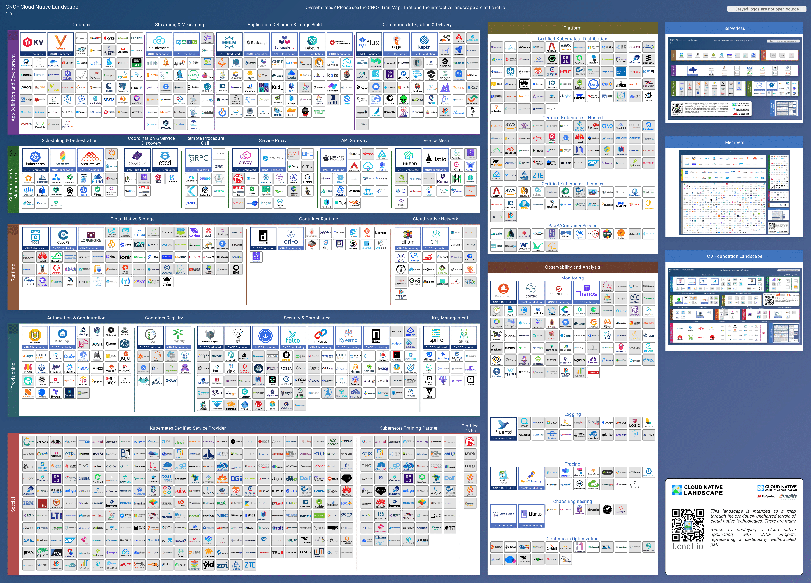
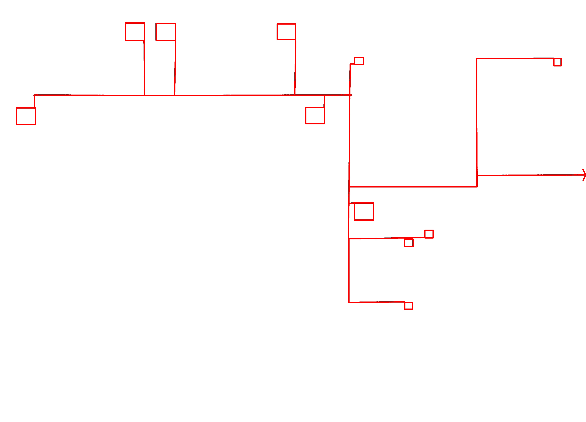
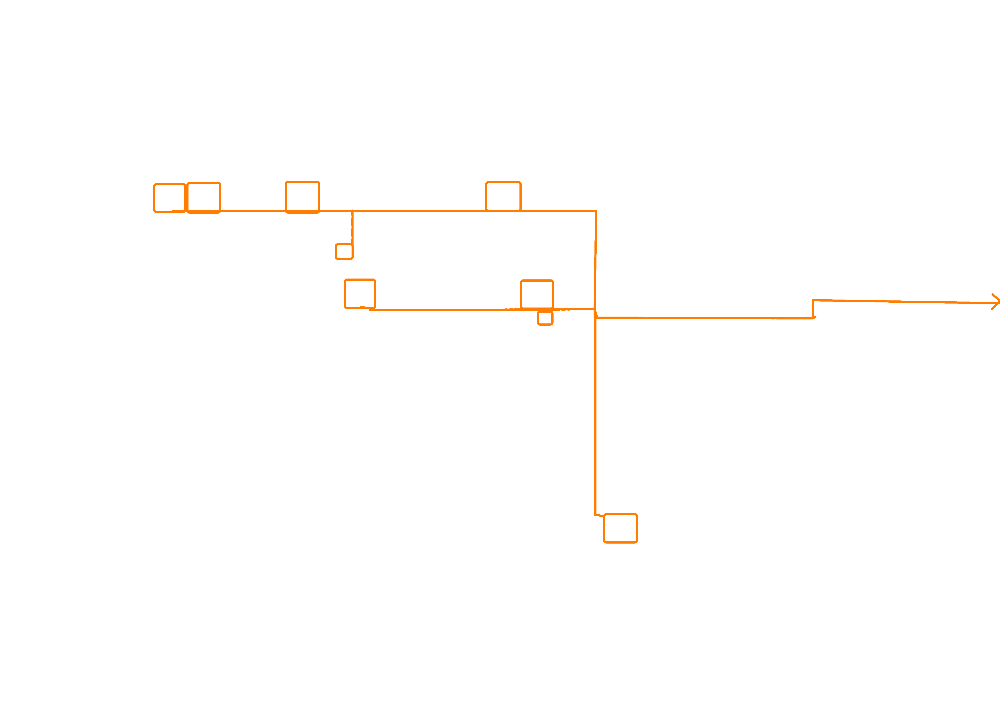
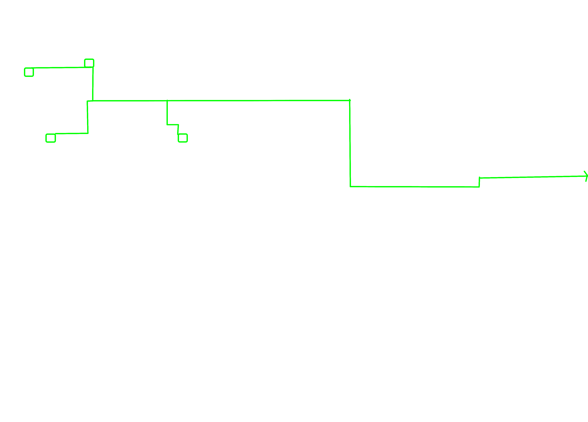
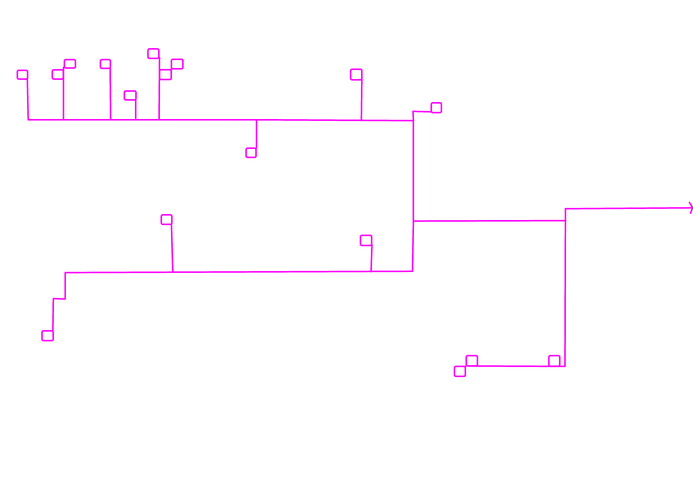
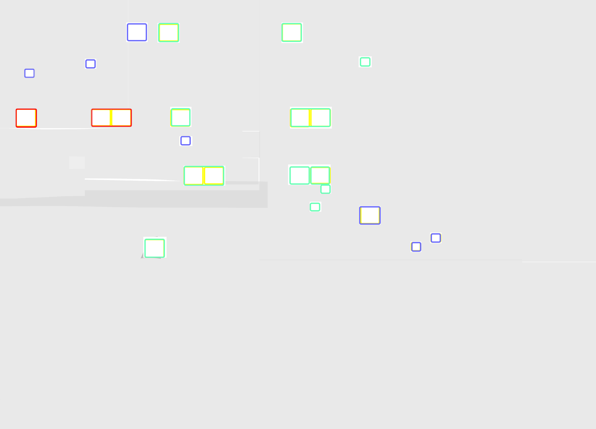

Click image: enlarge / Press Esc: minimize
Details
- Kubernetes: The main hero for the course.
- NATS: Used in the later parts of the course for discord alert.
- Helm: Used to intsall various resources and components during the course.
- Argo: Used in part 5 to facilitate GitOps inside GKE cluster.
- Istio: Main dish(dare I say) of part 6 for service mesh implementation.
- K3s: Used as local test cluster mainly in the earlier parts and part 6 of the course.
- Knative: A serverless extension for K8S that I learned in part 6.
- Prometheus: Used mainly in part 4(I think) for monitoring with the loki addon.
- Grafana: Used in conjunction with Prometheus to visualize logs and metrics.
- Kiali: Comes with Istio as addon. Used to visualize mesh traffic and health.
- CoreDNS: Unknowingly included in K8S. Backbone of in-cluster name resolution.
- etcd: Cluster state k-v storage. It was there all the time!
- envoy: Data plane backbone for things like Istio. The actual traffic enforcers in meshes disguised as sidecars.
- traefik: The ingress controller that I used for k3d cluster.
- linkerd: Not used. Accidently included it.
- containerd: Missed a square for this. Standard container runtime for k8s via CRI-O.
- CRI-O: The container runtime interface that k8s uses for standard environment.
- CNI: Provides pod networking and network components interoperability. Things like Flannel works on top of this.
- Flannel: A CNI plugin for pod communication. let's pods talk over different namespaces. I probably have used this unknowingly with k3d.
- Fluentd: Collects logs and forwards it to consumers. GKE seemed to run this as default on cluster creation along with Prometheus.
- Redis: Used(not cloud-based) briefly in the simple http app to facilitate `todo-added` and `todo-done` message delivery.
- PostgreSQL: Same as above, used(not cloud-based) in the simple http app for statefulness.
- rust-rs: Used to build a custom controller for assignment in part 6.
- nginx: Used in part 6 to reverse-proxy the simple wiki clone app.
- Oracle: Used in a web project DB in other project.
- MariaDB: Used at work for image metadata storage.
- MySQL: Used in a web project DB in other project.
- Pulsar: Used in a project for data pre-processing.
- Spark: Used in multiple projects for batch processing.
- Kafka: Used in multiple projects for stream processing and queuing.
- Flink: Used in a project for real time data capture.
- Jenkins: Used in a project for push-based CI/CD.
- AWS: Used in multiple data pipeline projects.
- MetalLB: Used in a local bare metal K8S setup exercise.
- MinIO: Used in a data pipeline project to test object storage manipulation from local.
- Calico: Used in conjunction with the above MetalLB cluster.
- Terraform: Used in multiple pipeline projects for declarative management of AWS resources.
- Elastic: Used in a project to facilitate fast, distributed and fuzzy text search from a large news database.
- Opensearch: Same as above
- Logstash: Used in projects for log stream transformation along with Kibana and Elasticsearch.
- Red squares: The default backbone of K8S. Included in vanilla!
- Green squares: And then we use these on top of the red ones. Core or essential components.
- Purple squares: Optional components that I used in the course.